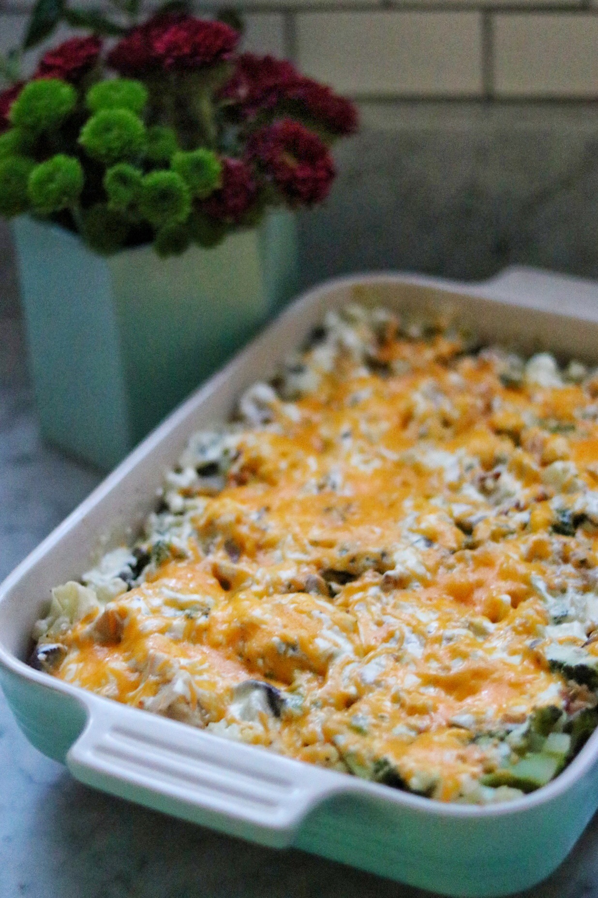

Creamy Chicken and Vegetable Bake

Description
This creamy chicken and vegetable is low carb and high fat, everything you want in a keto dish! This is a large recipe that you can easily get 8 to 10 servings from. You can dish up all the leftovers into meal prep containers for lunches.
Ingredients
- 3 tablespoons butter, divided
- 8 ounces shortcut bacon, chopped
- 1 yellow onion, chopped
- 1 clove garlic, minced
- 4 skinless, boness chicken breasts, cubed
- 1 head broccoli, chopped
- 1 leek, chopped
- 2 cups sliced fresh mushrooms
- ¼ cup chicken stock
- 1 tablespoon garlic and herb seasoning
- ½ cup heavy cream
- ½ cup cream cheese
- ½ cup grated Parmesan cheese
- ½ cup grated Cheddar cheese
Steps
- Preheat the oven to 350 degrees F (175 degrees C).
- Heat 1 tablespoon butter over medium heat in a large pot. Add bacon, onion, and garlic; cook until onion is soft, about 5 minutes. Add chicken and cover the pot. Cook until chicken is no longer pink in the centers, stirring occasionally, about 10 minutes.
- Stir in broccoli, cauliflower, leek, mushrooms, chicken stock, and garlic and herb seasoning. Replace the lid and cook
until vegetables are soft, about 10 minutes.
- Meanwhile, heat a saucepan over medium heat. Add remaining butter and heavy cream and heat through, 2 to 3 minutes. Add cream cheese and cook until melted, stirring often, 3 to 4 minutes. Remove sauce from heat. Stir in Parmesan cheese.
- Drain and discard excess liquid from chicken mixture, if necessary. Transfer mixture to a large baking dish. Pour sauce
on top and add grated Cheddar cheese.
- Bake in the preheated oven until cheese is melted and browned to your liking, about 10 minutes.